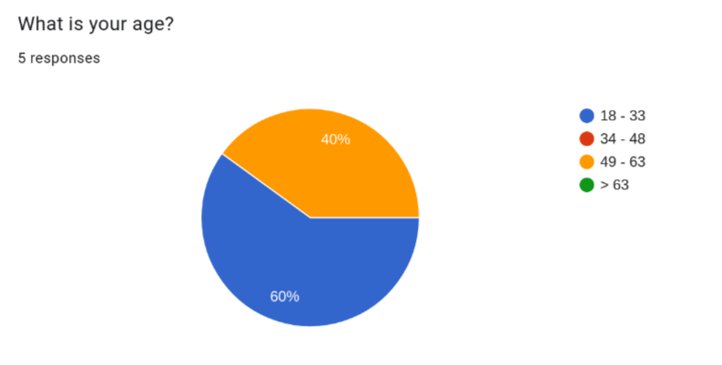
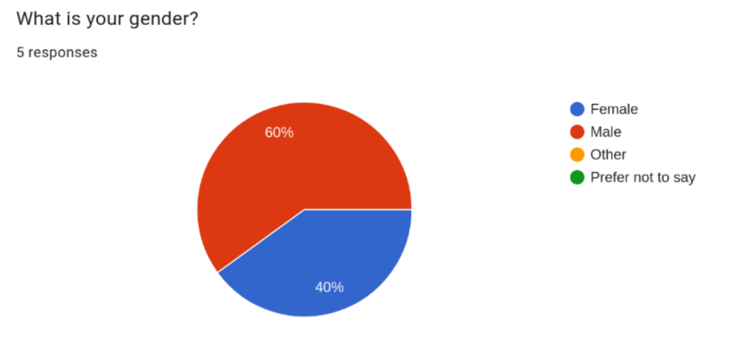
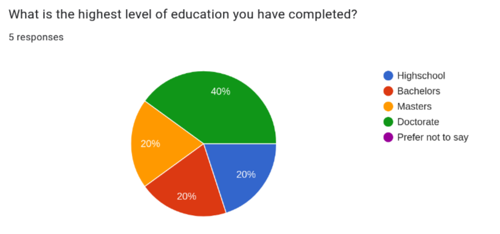

The Un-Subscribe Website
Emery C
Stage 1: Empathy
Problem Statement
Every day consumers are on the front lines against antagonistic UX designed to make it a challenging as possible to cancel subscriptions and put in the unreasonable position to decipher the gotchas of lengthy EULAs (End User License Agreement). I plan to design an website to aggregate, curate, update and make easily accessible instructions for canceling subscriptions as well as warn users about large gotchas in EULAs. A great example of EULA gotcha is Adobes 50% cancellation fee after 14 days. The hope is that you could send a link to an instruction article on this website to even non-technical users and they could follow along to cancel a subscription.
Interviewee Selection
My goal is to provide this app to people with many subscriptions to reduce the hassle of managing them all and to those that would struggle more with canceling subscriptions such as older people. Using this goal I have created the following target demographics for the interview.
Looking at age ranges, according to a study from 2022, music subscriptions, are about equally popular between 18-34 and 35-54 age ranges (Statista). Video streaming subscriptions however are even more popular with younger generations with 70% of 18-34 year olds to 43% of > 55 year olds reporting that they had a Netflix subscription in 2024 (Statista). As a result, I plan to target some younger people between 18-35 as well as some older people between 35-55 so I can both capture the younger people that have many subscriptions and the older people that might have more difficulty even with fewer subscriptions. I could try having an even older group that would have more difficulty canceling subscriptions but I have limited time and the number of elderly that would be able to use an external website for help when they are also struggling with unsubscribing so much is probably pretty small.
As for gender, men typically have a few more subscriptions than woman (WSJ) so I've opted to interview 3 men and 2 woman. This way I can interview more people that likely have more subscriptions.
For the ages, as planned, I interviewed 3 younger people (ages 18-33) as well as 2 older people (ages 49-63)
I also interviewed 3 men and 2 woman as planned.
Lastly, I couldn't find any information on how education level correlates to number of subscriptions but I thought it was important to collect. This was because I interviewed many college students since they are the most available to me to interview. This makes my interview pool highly skewed in favor of people with or in the progress of getting a college degree. I felt it was important to disclose this as it may affect how representable the interview pool is.
Interview Questions
Below are the questions I asked in each interview. Some of these questions can technically be answered with a simple yes no so I made sure to ask follow up questions if needed so they would describe the specifics behind their answer such as why they would not read an entire EULA.
- Do find some interfaces annoying? if so, what's an example?
- Do you have any subscriptions? if so, what's are some examples?
- Have you every encountered issues while canceling a subscription?
- If there was an app that would walk you through canceling a subscription would you use it?
- How would you describe your tolerance for ads on websites?
- Have you ever needed to lookup how to cancel a subscription?
- Have you ever read a EULA?
- Have you ever felt you weren't informed about an important part of the EULA? if so, what's an example?
- Do you know someone who you think would have difficulty canceling a subscription?
Empathy Maps

-
Pains
- Jumping through hoops to unsubscribe from things.
- Raising prices.
-
Gains
- Not wasting money.
- Happy to help people navigate bad UIs.

-
Pains
- The local newspaper website is very hard to use.
- Unsubscribing on websites is hard for him.
-
Gains
- Likes Apple products a lot.
- Likes dealing with subscriptions through apple so he can skip using individual websites.

-
Pains
- Going in person to cancel subscriptions is annoying.
- Doesn't like having too many apps.
-
Gains
- Happy to save money by canceling subscriptions.
- Enjoys the small things like how the placement of advertisements on websites can be very funny.

-
Pains
- Doesn't like auto-signup subscriptions.
- Doesn't like the though of subscriptions taking money even when you don't interact with the service for an extended period of time.
-
Gains
- Likes as few advertisements as possible.
- Likes that if you use other peoples subscriptions you don't have to worry about.

-
Pains
- Mailing things to cancel subscriptions is annoying.
- Having user data sold to third parties without informed knowledge.
-
Gains
- Likes to get other people for help.
- Likes to not pay for unneeded subscriptions.
Conclusion
Looking over the interviews and empathy maps I've come up with the following key insights:
- Most people would be open to using a website that helps unsubscribe from things as long as it actually saves time in the end to have to go to this extra website.
- Some people have reported that they have resorted to getting help unsubscribing from something from things from various sources.
- No one really reads EULAs but sometimes they would like to know some of its terms like what they do with your user data so you are more informed about what you are signing up for.
- People are indeed motivated to cancel unneeded subscriptions despite the often difficulty of doing so because it saves them money.
- Most people had at least one especially bad experience canceling a subscription where money was or was almost lost and the process was frustrating.
- Unsubscribing often isn't easy and is sometimes even broken.
- Everything thinks that their grandparents/elderly people (> 60) will struggle a lot with canceling subscriptions.
- Everyone would like it if unsubscribing was easier but companies have the complete opposite incentive.
What surprised me the most but in retrospect is very obvious was that while this website may help, people are already very sufficiently motivated to figure out unsubscribing because it saves them money. Meaning, that a lot of people will figure out how to unsubscribe even if it takes them a while to wade through whatever antagonistic/broken UI is thrown their way. What this website I'm proposing would need to do then to help users that would have figured it out eventually is to have unparalleled ease of use and searchability in order to actually save them time.
One way you could try making it save more time is that instead of being a separate website with screenshoted steps of what you need to do I could instead provide a browser extension. The extension could walk you through the UI of the actual unsubscribe webpage by just pointing to the next button to press. This would counteract any dark patterns in the most literal way possible by turning them into light patterns.
The other use of the website, to provide EULA gotchas still seems applicable to all users no matter their ability to eventually unsubscribe because no one really reads EULAs.
Lastly, It didn't seem like the older people I interviewed (ages 49 - 63) had significantly more issues than the younger group but both were more open to external resources like getting help from other people or tools to deal with unsubscribing (Apple). This indicates that people in the 49 - 63 age range might be more open to using the website I'm proposing than the younger group which seemed more willing to take on unsubscribing unassisted.